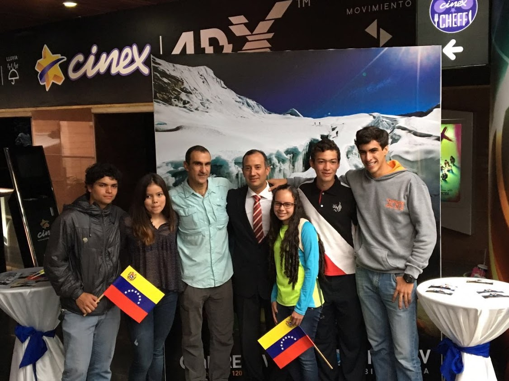
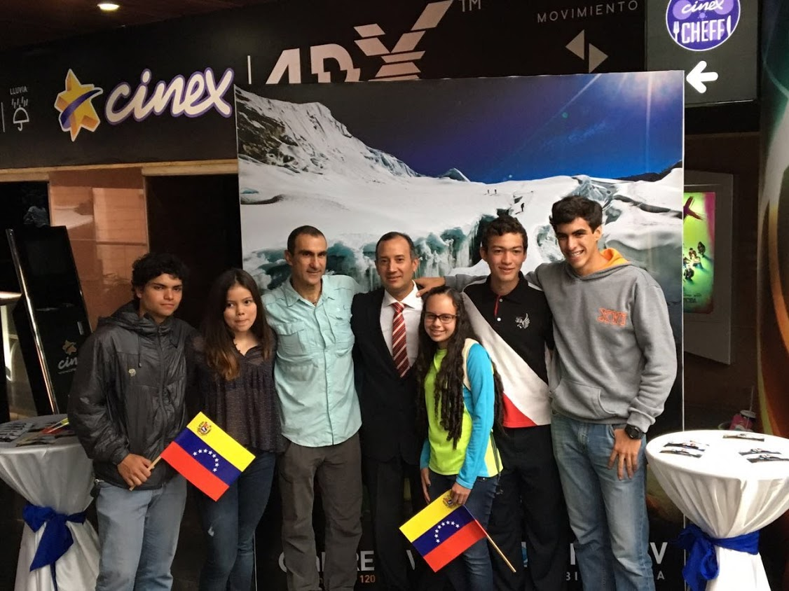
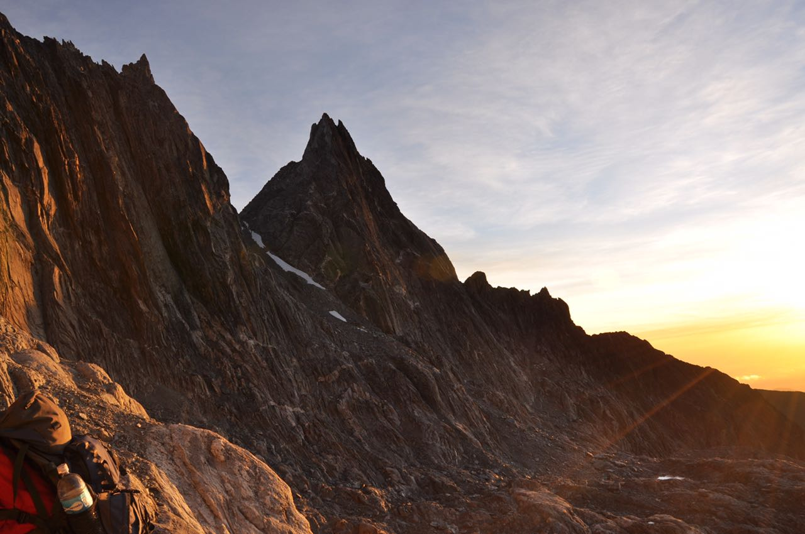
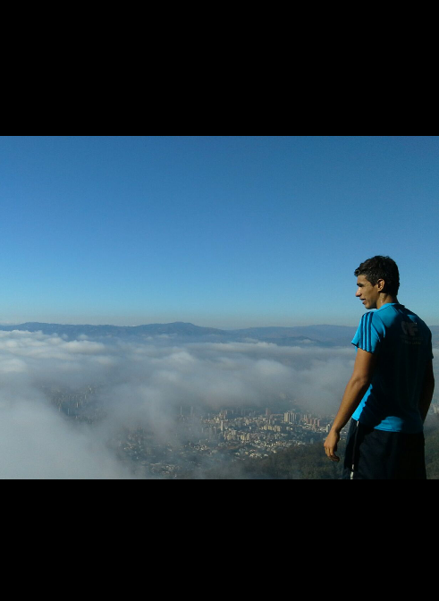
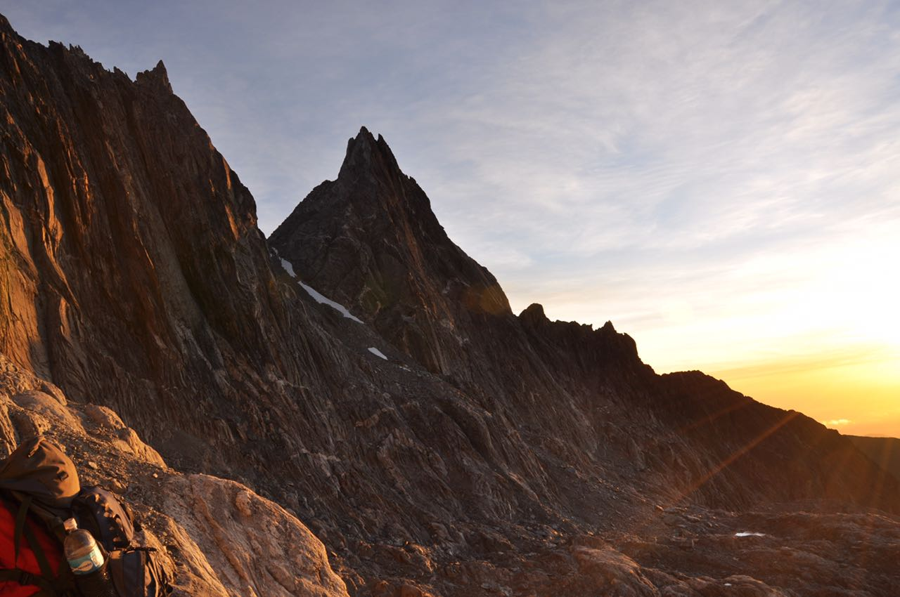
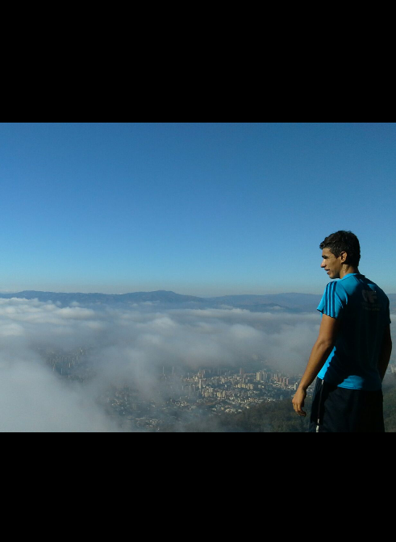

Life's a mountain, not a beach
Scroll down

Life's a mountain, not a beach
Scroll down
Hey there! First of all, I want to thank you for taking a few minutes of your time to look through my website. My name is Marcos Alfredo Carbonell Gutierrez, I'm a Venezuelan 19-year-old student currently living in Heidelberg and studying mathematics at the Ruprecht-Karls-University of Heidelberg. My journey began in Caracas, the capital of Venezuela the 20th of May of 1998.
After my birth, I was diagnosed with pyloric hypertrophy when I was only 21 days old. I was baptized before entering the operating room with severe dehydration, the doctor and my parents had no idea if I would be allergic to anesthesia, which made the whole situation a lot more stressful. For some miracle, I survived. Two years later I fell down the stairs of my house and broke my right femur in two. The doctors had to plaster my whole body from my knees to my chest to immobilize the fracture. As I could not walk, I spent the next 2 months crawling on the floor of my grandparents' house with a huge smile on my face 24/7 calling myself "turtle". A year later I was diagnosed with an inguinal hernia and had to be operated again to extract it. The year later my parents got divorced and I moved with my mother to my grandparent's house. We lived there until I turned 15.
In 2004 my mother decided that I should attend the German school of Caracas, where my formal education began. On 2006 I had to enter the operating room again, this time my tonsils had to be removed, but a week later, and the day before I should have returned to school, one of the stitches on the inside of my throat broke and as a consequence caused hematemesis (the vomiting of blood) on a Sunday evening at my grandparent's house. My mother wasn't at home yet so I had to wait for hours before receiving medical attention as my grandparents didn't have a car at that time. In the clinic, the wound was cauterized and cleaned. I could not speak for the rest of the week due to the pain I was feeling in my throat. When I returned to school a week later I realized I couldn't even speak with my friends, I had become a stutter. I raised my hand in a German class and even though I knew the answer, somehow my voice was blocked. This only intensified the bullying I received at school and made me lose some friends. My personality changed of being the leader of the class to be the insecure kid who was terrified of raising his hand to say an answer because of the fear of stuttering. I was frustrated every time I spoke with someone, including my family and friends. After this, I entered a period of depression. I would take 9 years of psychologists, psychiatrists and language therapists to partially recover my speech fluency.
A few years later my mother and father had already been through many unsuccessful and toxic relationships with different partners, from which I had to be present in several separations. Besides the political, economic and social situation of Venezuela was only getting worse every day, under the leadership of a social-communist regime that led the country with the greatest oil reserves in the world to ruin and misery. Insecurity was also a great problem, Venezuela is one of the countries with the highest homicide rate in the world. Narcotrafic, kidnappings, and robbery are every day's bread. Besides we had the highest inflation rate in the world, which is estimated to be 2.500.000% since 2012. People usually make lines to look for food in the garbage of restaurants and supermarkets.
You may be wondering why I'm telling you all of this, the reason is that on my philosophy, the best way to predict someone's trajectory in life is by studying his/her past. And over time, I've learned that calmed waters never train skillful sailors. Every single problem we face in our daily routine makes us a bit stronger, a bit better, a bit more mature than we were before. We don't have to ask for safety and security but for adventure. Everyone can decide to turn his/her life around for the better today if they proposed to, you just need a reason to start.
On 2012 I was selected to be a member of the Children on the Summit project season II. Guided by the first Venezuelan man to ever climb Mount Everest, Marcus Tobia. The project consisted of selecting a group of Venezuelan and Nepalese children. Then bringing the Nepalese children to Venezuela to climb Venezuela's second highest mountain together and then going to the Caribean sea so that the Nepalese children could see the ocean for the first time in their lives. But it doesn't stop there, 6 months later we climbed the Imja Tse Peak in Nepal, a 6189 m.a.s.l. mountain in the Himalayas that had never been climbed by children before. I was 14 at the time. All of this was filmed and the turned into a TV series and later a documentary to be transmitted by Venezuela's main TV stations.
Over time and with a lot of dedication, hard work and discipline, I managed to change myself to the German section of the school in 2013, over the opposing opinions of several teachers who said I was not apt for the challenge, or that I had "adaptability problems" because of my speaking issues.
Learning from this experience I developed my huge passion for sports and nature. I entered the school athletics team, the volleyball team, the swimming team and the basketball team all at the same time and during my last years of school, which I represented in the 2015 Humboldt-Spiele Cali, an international athletics, volleyball and swimming competition. And later in national competitions as a member of the Central University of Venezuela Athletics Team. A few months later I was on another expedition to the Angel Falls in Venezuela, as a staff member of the third season of Children on the Summit Venezuela-Greenland, where 10 Venezuelan children and 5 Inuits marched their way to the top of the worlds highest waterfall, and then climbed a mountain in the frozen fjords of Greenland. During this period of time and with a lot of guidance from Marcus I managed to climb the "Five White Eagles" or Venezuela's top 5 highest mountains, whose summits rise from 4998 to 4722 m.a.s.l., together with dozens of other Venezuelan mountains.
Between 2013 and 2016 I enlisted myself in the Gaitas group of the school (Venezuelan traditional music), in the HUMUN or Humboldt Model of United Nations, and as a volunteer of the Venezuelan Red Cross of Youth. This granted me some awards during our graduation ceremony. One of the student with the most hours of Social Labour in the history of the school (1554) , a golden plate for my dedication to school sports and participation in the Humboldt Spiele Cali 2015 and, the one I'm most grateful for, being selected as the most exemplary and inspiring student by my fellow classmates during the ceremony. I earned the title of Venezuelan Bachiller and, at the same time, the one of German Abiturient.
After this, I got a sports scholarship to study my ultimate passion, veterinary sciences in the Central University of Venezuela. I worked for as a veterinary assistant for over one year and a half in different veterinary institutes. Between the Francisco de Miranda Zoo in Caracas where I learned how to professionally handle crocodiles, poisonous insects and snakes. All of this while I kept on training athletics 4 hours a day, 6 days a week.
Sadly, Venezuela's situation only deteriorated over time. My parent's loan was barely sufficient to buy food and cover the minimum necessary expenses. My future in Venezuela seemed shady and grey as most of the enterprises and private investors had left the country over the last few years due to massive hyperinflation and awful working conditions, so I decided to quit the career of my dreams and start a new life in Germany. I had a lot of problems while soliciting the VISA because my family had not even a fraction of the necessary money (almost 9000 EUR) to request it. But through another favor of my school's German ex-math teacher Nino Kappler, I managed to earn the Visa and leave my motherland just 3 days later. I left all of my family, my beloved pets, my friends and my girlfriend.
Once in Germany I had planned to stay in Mannheim with two very good friends from school: Jesus Casal and Alexander Becker. Who first encouraged me to enter the world of web development. At first, I would do it only as a hobby, but then I discovered its creative possibilities and its limitless application potential and decided to implement it as a part of my career and future. Now we're planning on building a full-stack MERN application that will be released in December of this year called Tildea.
At last, I want to thank every single person who helped me in my transition towards my new life here in Germany. It's never easy to leave your nation to start all over from zero again, but with determination, adaptability, hard work, discipline and perseverance nothing is impossible. Have clear that life is not fair and that you'll fail often, but if we stand up when the times are the toughest, face down the bullies, take some risks and never ever give up, then we are on our way of becoming the succesful human beings we always dreamed of and make of the world a better place to live in.
I hope you enjoyed reading through my life as much as I enjoyed writing about it.
Best Regards
Marcos
 

 




Descending from the Angel Falls in helicopter after almost three weeks of adventure.